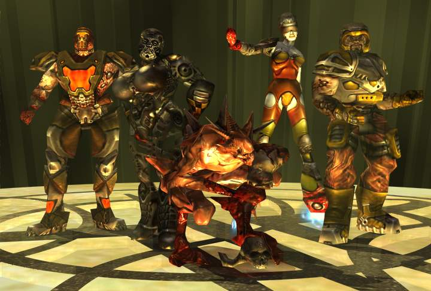

Quake III Arena
Quake III Arena is a 1999 multiplayer-focused first-person shooter developed by id Software. The third installment of the Quake series, Arena differs from previous games by excluding a story-based single-player mode and focusing primarily on multiplayer gameplay.
The single-player mode is played against computer-controlled bots. It features music composed by Sonic Mayhem and Front Line Assembly founder Bill Leeb.
Modes
Quake III comes with several gameplay modes:
Quake III Arena's Single Player Campaign
In Quake III Arena, the player progresses through tiers of maps, combating different bot characters that increase in difficulty, from Crash (at Tier 0) to Xaero (at Tier 7/Z). The difficulty of the bots can be customized before the beginning of the battle through 5 different difficulty selections, from I Can Win (the easiest) to Nightmare (the hardest). While deathmatch maps are designed for up to 16 players, tournament maps are designed for duels between 2 players and in the Single Player game could be considered boss battles.
Multiplayer
Quake III Arena was specifically designed for multiplayer, the game allows players whose computers are connected by a network/LAN or to the Internet, to play against each other in real time. It uses a client-server architecture that requires all players' clients to connect to a server. Q3A's focus on multiplayer gameplay spawned a lively community, similar to Quakeworld, that is active to this day.
Environmental Features
- Bounce Pad
- Acceleration Pad
- Teleporter
- Gate
Environmental Hazards
- Fog
- Water
- Slime
- Lava
- Fog of Death
- The Void
- Pendulum
Weapons
- Gauntlet
- Machine Gun
- Shotgun
- Grenade Launcher
- Rocket Launcher
- Lightning Gun
- Railgun
- Plasma Gun
- BFG10K
Difficulty
In Quake III, there are five difficulty levels instead of the normal four.
All of them can be selected when starting any Singleplayer map.
The skill of the bots in each map depends on the selected difficulty level.
At lower difficulties, bots are handicapped at health and damage they dishout,
also unresponsive to the sight or audial cues they gathered for first few seconds
and don't pay attention to dodging or positioning.
While high difficulty bots, would have jumping characteristics, change directions at random,
can take cover against stray fire and prioritize item pickups by following a specific route.
Depending on their weapon skill profile; they aim for either leading the missile projectiles
successfully or have pinpoint accuracy at long distances by swiftly aligning their shot
The difficulty levels are:
- "I Can Win"; bots will get handicapped at 50%, very slow reaction time, low awareness, slow movement, very low accuracy
- "Bring It On"; bots will get handicapped at 70%, slow reaction time, low awareness, slow movement, mediocre accuracy
- "Hurt Me Plenty"; bots will get handicapped at 90%, mediocre reaction time, alert, predictable movement, mediocre accuracy
- "Hardcore"; no handicaps, fast reaction time, highly alert, unpredictable movement, high accuracy.
- "Nightmare!"; no handicaps, league level reaction time, always alert, unpredictable movement, full accuracy.